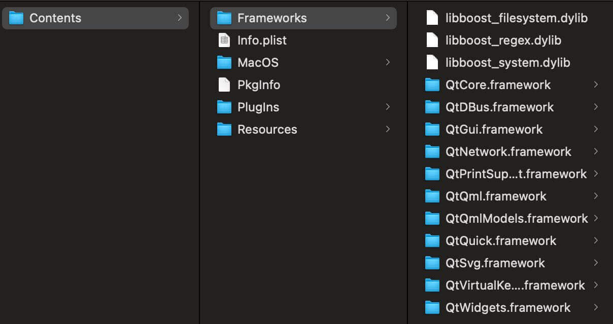

这篇文章上次修改于 483 天前，可能其部分内容已经发生变化，如有疑问可询问作者。
在 Windows 下可以使用 QT 部署工具：windeployqt 来自动提取可执行程序的依赖库，在 macOS 下同样有部署工具：macdeployqt 实现相同的功能。
工具路径在 QT 安装目录的对应编译器 bin 目录下，如：/Users/marconie/Qt/5.15.2/clang_64/bin/macdeployqt
为了方便使用建议将 bin 目录添加到系统 PATH 中，我的终端是 zsh 添加方法如下：
打开 ~/.zshrc 添加如下内容，可以使用 vim 来操作：
export PATH=$PATH:/Users/marconie/Qt/5.15.2/clang_64/bin编辑完成后关闭文件，刷新源：
source ~/.zshrc
现在就可以直接使用命令了：
macdeployqt -h
部署的方法是直接在 macdeployqt 后提供 app 路径：
macdeployqt path/to/test.app
执行后会自动搜索此 app 需要的 QT 库并打包到 app 内，可以打开 app 包查看相关内容：

如果项目中使用了其他第三方库，此部署工具不会自动提取相关文件，需要手动将相关库文件添加到 app/Contents/Frameworks 文件夹内。
没有评论